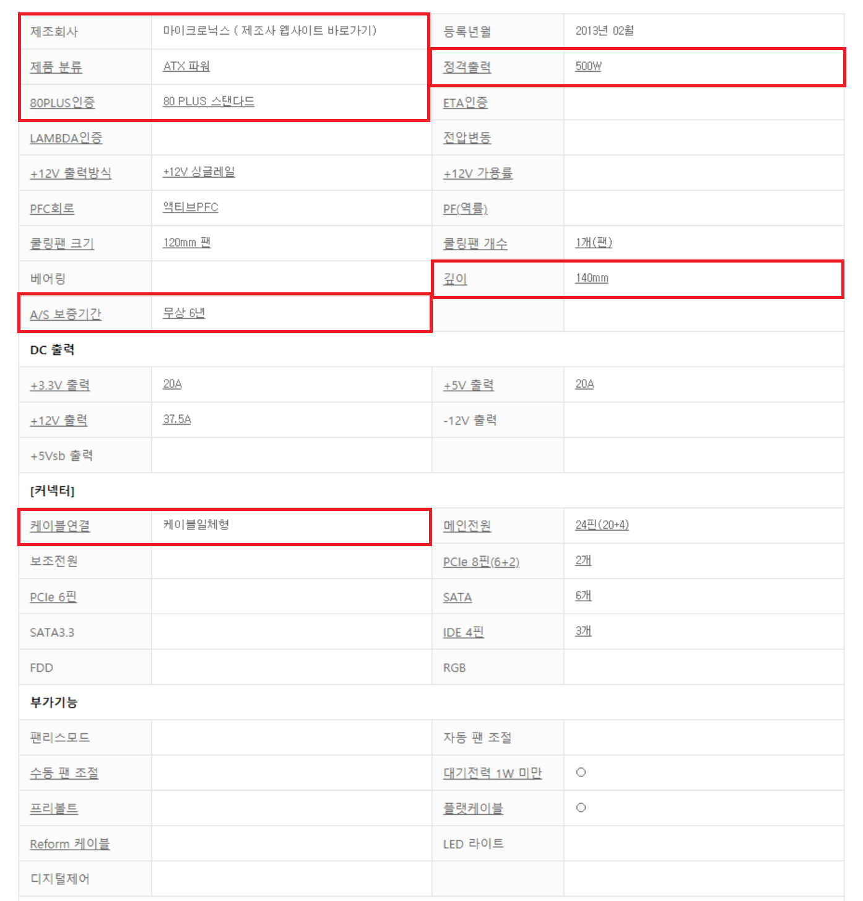

파워 서플라이
외부에서 들어오는 전류를 필요에 맞게 변환해서 컴퓨터에 전원을 공급해주는 장비입니다. 이름이 전원공급장치인 만큼 전기 공극븡 책임지는 중요한 부품으로 일반적으로 인체의 '심장'에 비유되곤 합니다.
상식 선에서 생각해보았을 때 왜 좋은 파워를 사용해야 하는지 이해가 힘들 수 있습니다. 만약 안좋은 파워를 사용하게 될 경우 출렁이는 전압 때문에 블루스크린이 발생하는 경우가 있기도 하며, 극단적인 예시로는 파워가 고장이 나면서
메인보드에 과전류가 흘러들어가게되어 메인보드도 고장나는 상황또한 발생합니다.
마이크로닉스 Classic II 500W 80PLUS를 예시로 설명하겠습니다.
마이크로닉스 : 제조 회사의 이름입니다.
Classic II : 해당 회사의 제품군 이름입니다. 제품군 별로 어떤 제품군이 더 좋다더라 하는 이미지가 존재합니다.
500W : 파워의 정격 출력을 의미합니다.
80PLUS : 공신력 있는 기관에서 평가한 효율성 지표로 파워 서플라이의 효율이 80% 이상일 경우 붙여지는 공식 인증 마크입니다. 성능을 평가할 때 주로 사용되는 지표입니다.

출처 : 다나와 닷컴 마이크로닉스 Classic II 500W 제품 상세설명
제조회사 : 파워는 생각보다 브랜드에 의미가 상당한 편입니다. 물론 실제 차이보다 이미지에 있어서의 차이가 더 큽니다. 이런 상황이 된 이유는, 우선 파워는 일반적으로 '안정성'과 A/S를 최우선으로 합니다. 이는 신뢰에 기반한 지표로써 브랜드 이미지에 상당한 영향을 받습니다.
따라서 본인이 구매하려는 파워의 브랜드를 검색하였을때 A/S나 안정성에서 이슈가 있다면 다른 제품을 선택하는 것이 좋습니다.
제품 분류 : 파워의 규격을 의미합니다. 일반 PC의 경우 ATX를 사용합니다.
80PLUS 인증 : 공신력 있는 기관에서 평가한 효율성 지표입니다. Standard, Bronze, Silver, Gold, Platinum, Titanum 등급이 존재하며 Titanum 등급이 가장 좋은 등급입니다. 파워에 특정 수준에 부하를 주었을 때 측정되는 효율로 등급을 결정하게 되며, 80Plus Stadard 이상의 파워가 권장됩니다.
정격출력 : 파워의 출력용량을 의미합니다. 각 PC부품마다 요구하는 전력량이 존재하는데, 각각의 요구 전력량의 합이 파워의 정격출력보다 낮아야 합니다. 일반적으로 그래픽카드 제조사에서 권장한 출력량이 적합합니다.
깊이 : 파워의 물리적인 크기를 나타내는 지표 중 하나입니다. PC케이스의 공간과 연동하여 생각하면 됩니다.
A/S보증기간 : 파워의 경우 고장 또는 용량이 부족한 경우를 제외하고는 일반적으로 잘 교체하는 일이 없어서 교체 주기가 PC부품중에서 매우 긴 편입니다. 따라서 이용하려는 PC를 오래 사용할 계획이라면 파워의 A/S기간이 긴 제품을 사용하는 것이 좋습니다.
케이블연결 : 케이블일체형, 세미 모듈러, 풀 모듈러가 존재합니다. 케이블 일체형은 각 부품으로 연결할 케이블이 파워에 기본적으로 장착되어있는 제품입니다.
세미 모듈러는 일부만 장착되어있고 나머지 케이블은 따로 제품 패키지에 동봉되어 연결 여부를 사용자가 편의에 맞게 선택할 수 있습니다.
풀 모듈러는 모든 케이블이 따로 제품 패키지에 동봉되어 있는 제품입니다.
풀 모듈러에 가까운 제품일수록 컴퓨터 조립 편의성이 높아지고 케이스 내부 케이블 정리를 더 깔끔하게 할 수 있습니다. 단, 가격이 더 비싸다는 단점이 있습니다.